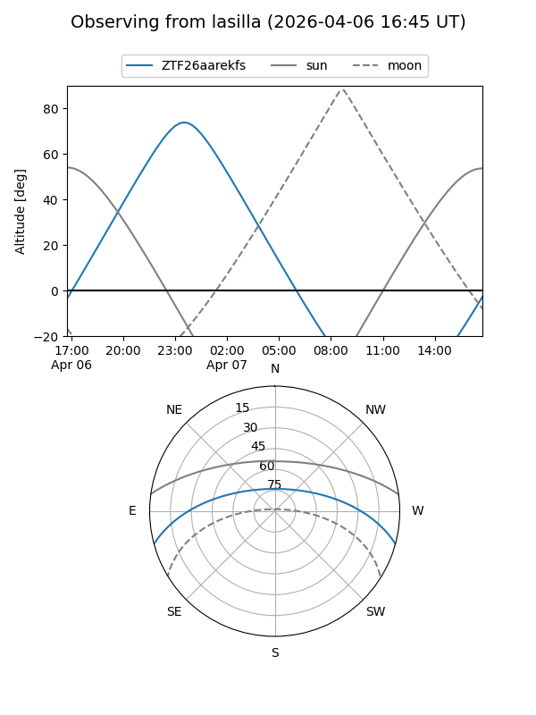
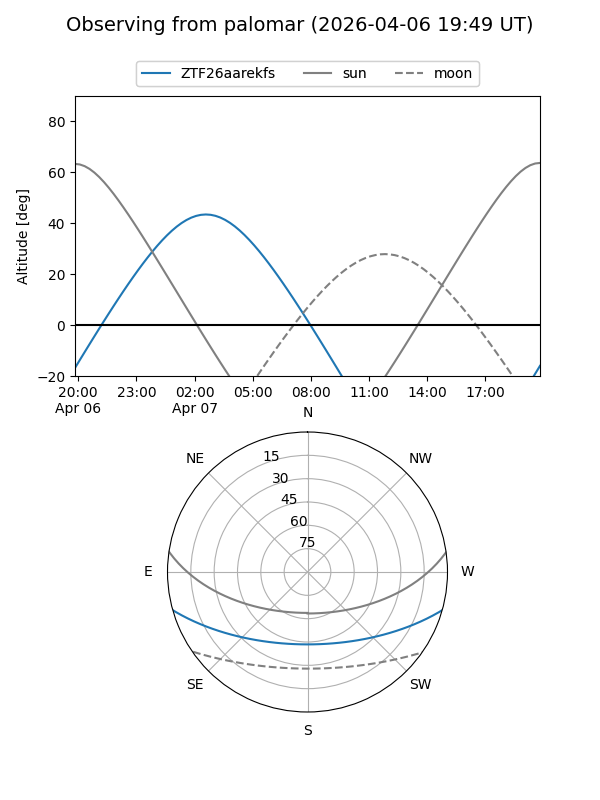

ZTF26aarekfs
Target ZTF26aarekfs at 2026-04-07 06:26
Aliases and brokers:
FINK: link
Lasair: link
ALeRCE: link
alt names
ZTF26aarekfs (ztf,fink_ztf)
Coordinates:
equatorial (ra, dec) = 117.0409,-13.11759
equatorial (HMS+DMS) = 07:48:09.81,-13:07:03.32
galactic (l, b) = (231.1503,+6.24991)
Flags:
Photometry:
last ztfg=19.70
1 ztfg detections
Lightcurve
Visibility


Additional plots